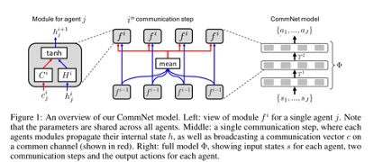

CommNet
文章名称为《Learning Multiagent Communication with Backpropagation》，agent之间基于通信来协同完成某个任务，通信的内容作为控制器网络输入的一部分来辅助控制器输出动作。（即利用隐藏层中含有的相关信息辅助训练）
模型结构

该框架中所有灰色模块部分的参数均是所有智能体共享的，这一定程度上提升了算法的可扩展性。从上图可以看出，算法接收所有智能体的局部观察作为输入，然后输出所有智能体的决策（其实整个框架有一点图神经网络的意思，这里使用的聚合函数就是 mean 函数，然后整个图是一个星状图）。
本算法采用的信息传递方式是采用广播的方式，文中认为可以对算法做出些许修改，让每个智能体只接收其相邻 个智能体的信息。
拿上图中间的框架图来说明，即上层网络每个模块的输入，不再都是所有智能体消息的平均，而是每个模块只接受满足条件的下层消息的输出，这个条件即下层模块对应的智能体位于其领域范围内。这样通过增加网络层数，即可增大智能体的感受野（借用计算机视觉的术语），从而间接了解全局的信息。
除此之外，文中还提出了两种对上述算法可以采取的改进方式：
1、可以对上图中间的结构加上 skip connection，类似于 ResNet。这样可以使得智能体在学习的过程中同时考虑局部信息以及全局信息，类似于计算机视觉领域 multi-scale 的思想
2、可以将灰色模块的网络结构换成 RNN-like，例如 LSTM 或者 GRU 等等，这是为了处理局部观察所带来的 POMDP 问题